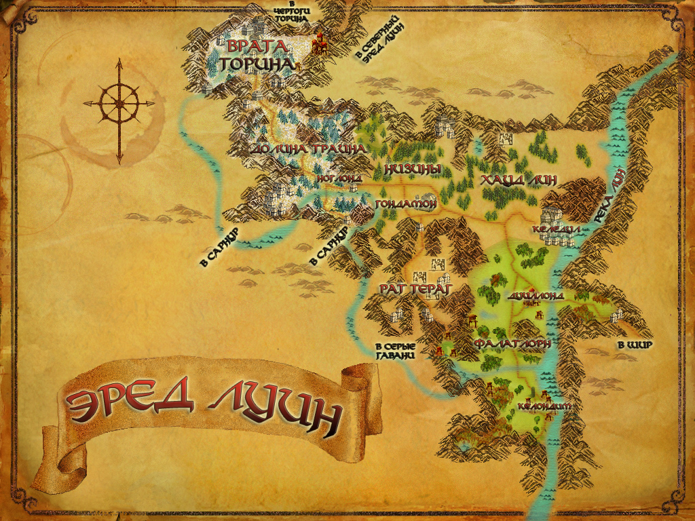
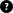
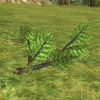
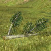
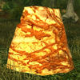
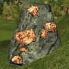
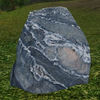
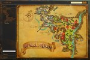

Эред Луин

Эред Луин (Синие горы) — край сияющих снежных вершин и цветущих зеленых долин, древние горы, где ещё можно найти руины величественных гномьих городов Первой эпохи, и укромные долины, скрывающие эльфийские гавани.
Встречаемые ресурсы:
- Древесина
- Рябина
- Ясень
- Руды
- Медь
- Могильное железо
- Серебро
Ссылка на интерактивную карту локации:

Вернуться к карте